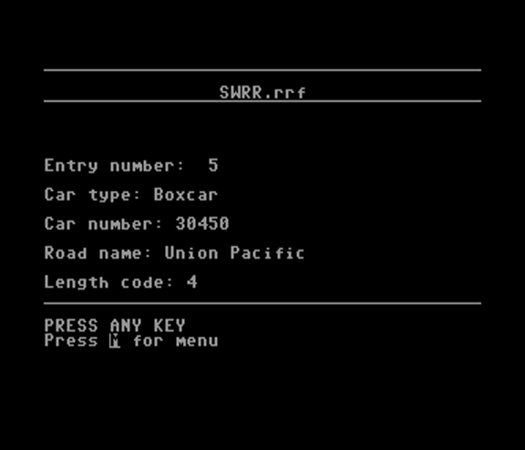
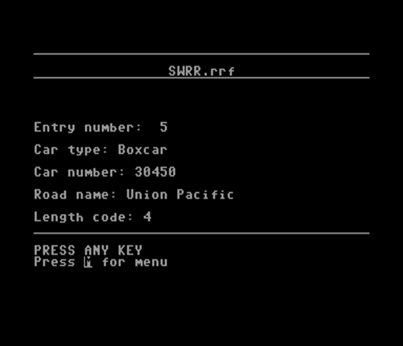
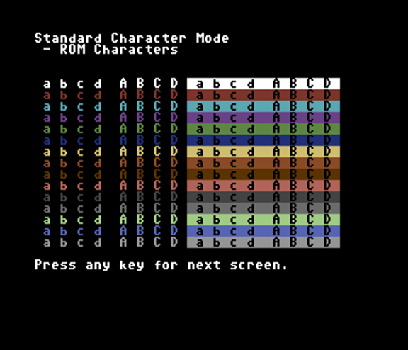
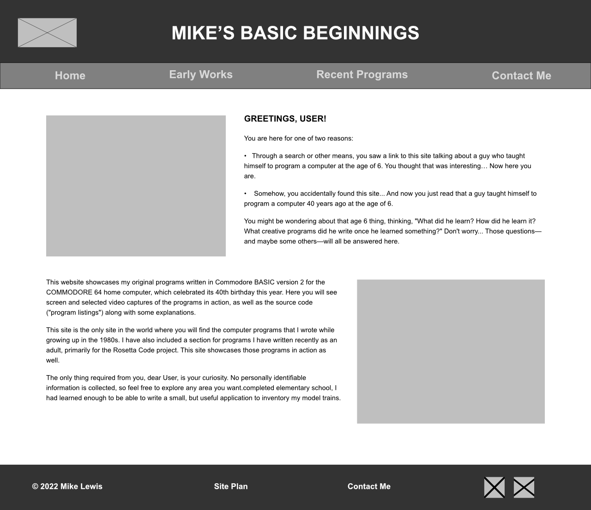
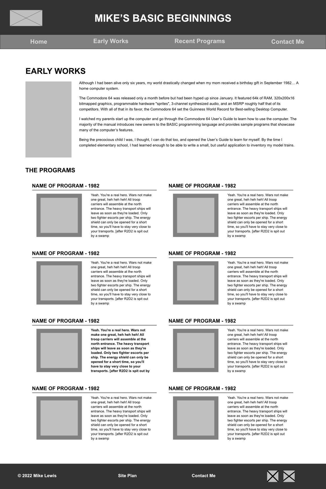
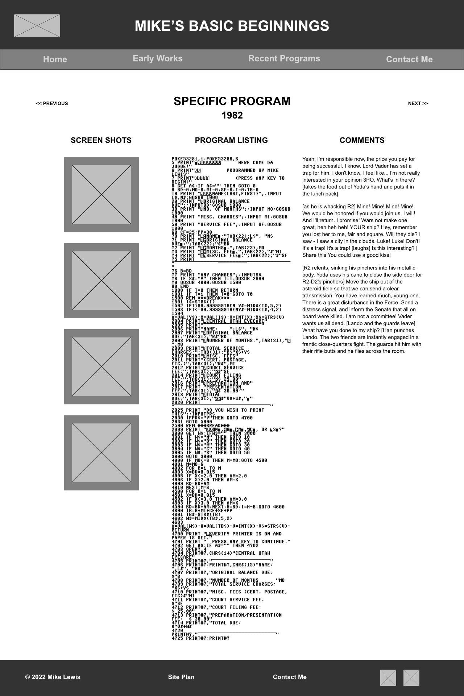

Overview
Purpose
I started programming my family's first home computer when I was 6 years old. This website will showcase the programs that I wrote from that point on as I taught myself computer programming. The programs are written in Commodore BASIC version 2.0, which was built into the ROM of every Commodore 64 computer. This all took place during the 1980s, which was an exciting time to witness and participate in the revolution of the personal home computer.
Audience
The intended audience is anyone who wants to know what kind of computer programs I wrote when I was a kid, and anyone who wants to know what programming a computer was like in the early 1980s.
Branding
Website Logo
Style Guide
Color Palette
Palette URL: https://coolors.co/2e2c9b-706deb-b2b2b2-4a4a4a-000000
| Primary | Secondary | Accent 1 | Accent 2 | Accent 3 |
|---|---|---|---|---|
[#4a4a4a] |
[#2e2c9b] |
[#706deb] |
[#b2b2b2] |
[#000000] |
Typography
Normal paragraph example
Congratulations, on your purchase of one of the best computers in the world. You are now the proud owner of the COMMODORE 64. Commodore is known as The Friendly Computer company, and part of being friendly is giving you easy to read, easy to use, and easy to understand instruction manuals. The COMMODORE 64 USER'S GUIDE is designed to give you all the information you need to properly set up your equipment, get aquainted with operating the COMMODORE 64, and give you a simple, fun start at learning to make your own programs. (Commodore 64: User's Guide, 1982)
Code Example
10 print "Hello World!"
20 goto 10
Colored paragraph example
Outstanding color ... sound synthesis ... graphics ... computing capabilities ... the synergistic marriage of state-of-the-art technologies. These features make the Commodore 64 the most advanced personal computer in its class. (Commodore 64: User's Guide, 1982)
Navigation
Site Map
Content
Home Page
Greetings, User!
You are here for one of two reasons:
- Through a search or other means, you saw a link to this site talking about a guy who taught himself to program a computer at the age of 6. You thought that was interesting… Now here you are.
- Somehow, you accidentally found this site... And now you just read that a guy taught himself to program a computer 40 years ago at the age of 6.
You might be wondering about that age 6 thing, thinking, "What did he learn? How did he learn it? What creative programs did he write once he learned something?" Don't worry... Those questions—and maybe some others—will all be answered here.
This website showcases my original programs written in Commodore BASIC version 2 for the COMMODORE 64 home computer, which celebrated its 40th birthday this year. Here you will see screen and selected video captures of the programs in action, as well as the source code ("program listings") along with some explanations.
This site is the only site in the world where you will find the computer programs that I wrote while growing up in the 1980s. I have also included a section for programs I have written recently as an adult, primarily for the Rosetta Code project. This site showcases those programs in action as well.
The only thing required from you, dear User, is your curiosity. No personally identifiable information is collected, so feel free to explore any area you want.
Images for the Home page

Early Works
Although I had been alive only six years, my world drastically changed when my mom received a birthday gift in September 1982… A home computer system.
The Commodore 64 was released only a month before but had been hyped up since January. It featured 64k of RAM, 320x200x16 bitmapped graphics, programmable hardware "sprites", 3-channel synthesized audio, and an MSRP roughly half that of its competitors. With all of that in its favor, the Commodore 64 set the Guinness World Record for Best-selling Desktop Computer.
I watched my parents start up the computer and go through the Commodore 64 User’s Guide to learn how to use the computer. The majority of the manual introduces new owners to the BASIC programming language and provides sample programs that showcase many of the computer’s features.
Being the precocious child I was, I thought, I can do that too, and opened the User’s Guide to learn for myself. By the time I completed elementary school, I had learned enough to be able to write a small, but useful application to inventory my model trains.
The Programs
- Job - 1982
- Screen Change - 1983
- Prediction - 1985
- Robeep - 1985
- Gypsy Fortune - 1985
- E-Bits! - 1986-1987
- Here Come Da Judge - 1988-1989
- Railroad Roster - 1991
Images for the Page 2

 

Recent Programs
About five or so years ago, I discovered a website at rosettacode.org. It is a wiki-based website, and the introduction on the home page explains it best:
“Rosetta Code is a programming chrestomathy site. The idea is to present solutions to the same task in as many different languages as possible, to demonstrate how languages are similar and different, and to aid a person with a grounding in one approach to a problem in learning another” (Rosetta Code, 2022).
This intrigued me, and as I started browsing some of the tasks, I discovered that dialects of BASIC from 8-bit machines were represented for as many tasks as they could actually complete. There were already some entries for Commodore BASIC, so I created a user account. On days that I traveled on overnight trips for work, I would spend the evenings in my hotel running the VICE emulator on my modern computer and creating translation entries for Commodore BASIC.
In the last four years, I have contributed to 50 programming tasks with Commodore BASIC implementations, most of them in Commodore BASIC V2. My favorites are chosen either because of the unique solution to the problem, or because the task showcases the features (or limits) of the Commodore 64.
The Programs
- Count Change - October 8, 2019
- Old Lady Who Swallowed a Fly - August 9, 2020
- Video Display Modes - August 22, 2020
- Variables - August 30, 2020
- 24 Game - November 18, 2020
- Machine Code - March 6, 2021
- System Time - March 17, 2021
- BASIC Error Messages - October 3, 2022
Images for the Page 3

Wireframes
Create three wireframes for your site. One for each page and list them here
Home
No specific details. Just a nice, BASIC homepage. ;-)
Early Works and Recent Programs
This layout will be nearly identical for both the Early Works subpage and the Recent Programs subpage. Each program header (and the associated screen shot) will be a link to the specific program page.
Specific Program Subpage
This is the layout that will be used for each individual program. It features three columns: one to show screen shots of the program in action, one for the program code itself, and one for any additional comentary I might provide.
